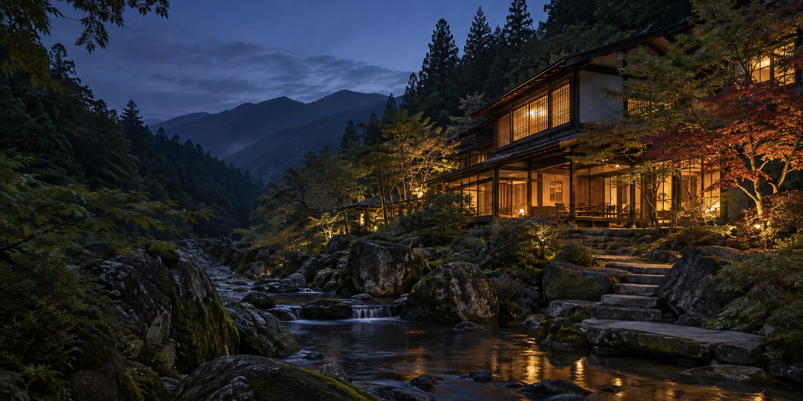
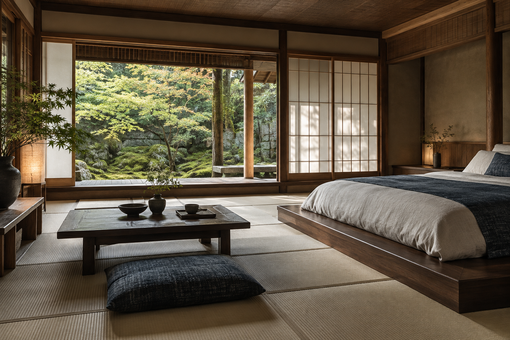
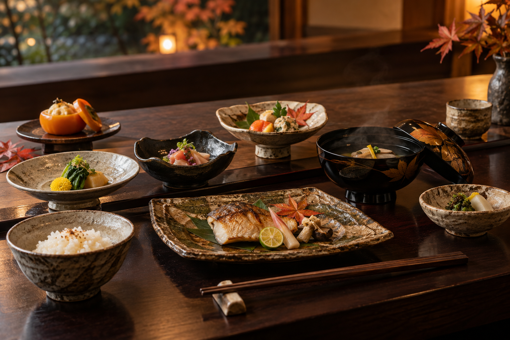
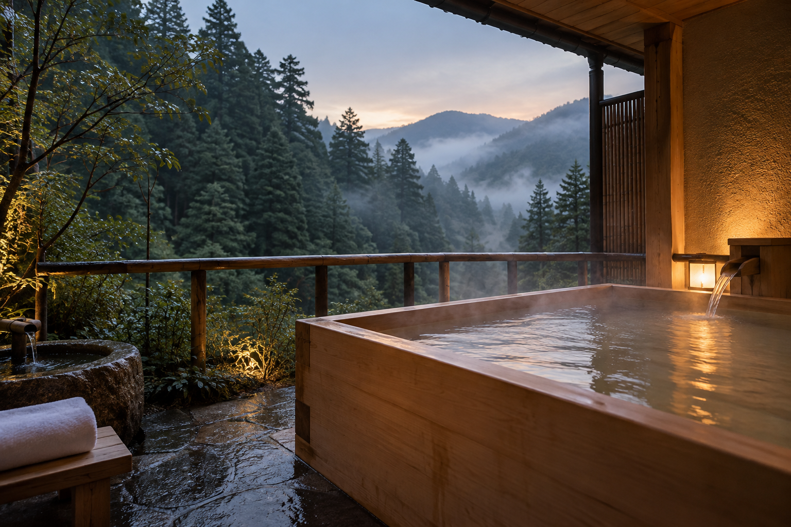
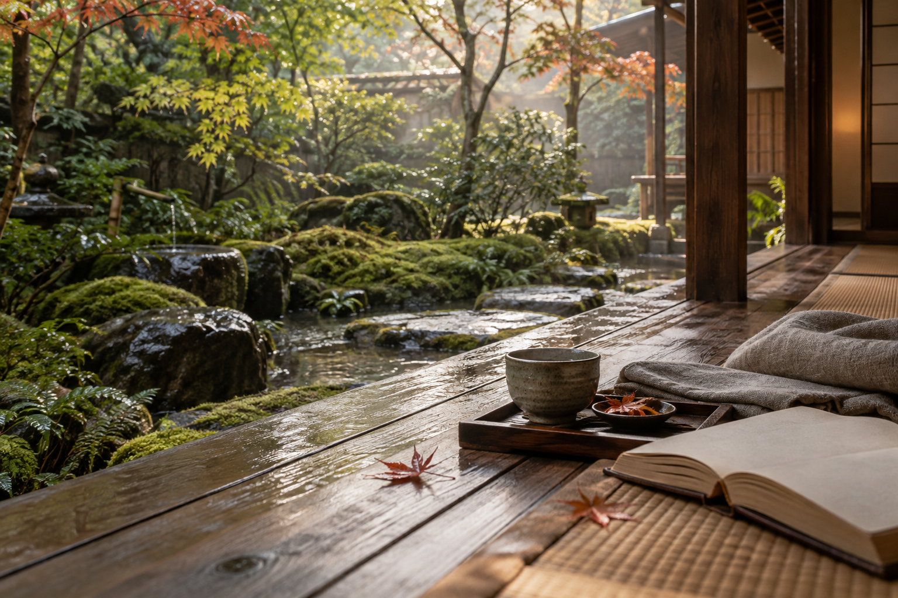

SCROLL月白庵について
旅の目的を、
静けさに戻す。
月白庵は、山と水のあいだにある一棟宿を想定したコンセプトです。予定を詰め込むのではなく、湯に浸かり、季節の皿をひとつずつ味わい、窓の外の明るさが変わるのを眺める。
目に見えるものを少なくすることで、聞こえるもの、香るもの、手に触れるものが立ち上がる。日常を離れるのではなく、日常の感覚を取り戻すための滞在を設計しています。
客室 / ROOMS
眠りのための、
三つの景色。
すべての客室に、庭を切り取る窓と、深く息をつける余白を。選んだ客室の詳細が下に表示されます。


SEASONAL TABLE / 02料理 / CUISINE
山の時間を、
一皿ずつ。
夕食は、土地の季節を写し取る小さなコース。焼き物の香り、椀のふたを開ける瞬間、器に残る余韻までを一食の流れとして設計します。
献立は季節ごとに変わる想定です。ここに掲載している料理は、月白庵のコンセプトを伝えるためのイメージです。
湯と滞在 / RITUALS
湯にほどけ、
朝を迎える。
窓を開けると、森の湿度が入ってくる。檜の湯に身体を預け、明るさが戻るまでの時間を、自分のために使う。
チェックインお茶と季節の香りで迎える
月白の湯貸切風呂で、山の音を聴く
朝の庭湯上がりの一服と、静かな読書

滞在の流れ / THE STAY
時間を、
ほどいていく。
旅館で過ごす一日を、予定表ではなく、感覚の変化としてご提案します。
渓流沿いのアプローチを歩き、部屋で一服。
夕暮れの光が残るうちに、檜の湯へ。
季節の皿を、会話の速度で味わう。
庭を眺めながら、目覚めの一杯。

THE MORNING AFTER RAIN宿泊プラン / PLANS
選ぶのは、
過ごし方。
以下はコンセプトサイト用のデモ表示です。実際の料金・空室・予約受付は行っていません。
予約デモ / DEMO ONLY
次の週末を、
静けさに。
ここから先はデモです。入力内容は送信されず、空室照会・決済・個人情報の保存は行いません。
アクセス / FAQ
旅の前後まで、
整えておく。
実在施設ではないため、ここでは商用サイトに必要な案内要素をコンセプトとして配置しています。
MOUNTAIN VALLEY
どこにある宿ですか？
月白庵は架空の施設です。実在の住所・最寄り駅・送迎時刻は設定していません。
食事のアレルギー対応はできますか？
実運営情報ではありません。実際の宿泊施設では、予約時に宿へ直接ご相談ください。
予約デモで入力した内容は保存されますか？
保存・送信されません。フォームの確認メッセージを表示するだけのフロントエンドデモです。
このサイトの写真について
すべてこのコンセプトサイト用に生成したオリジナル素材です。第三者旅館の写真は使用していません。